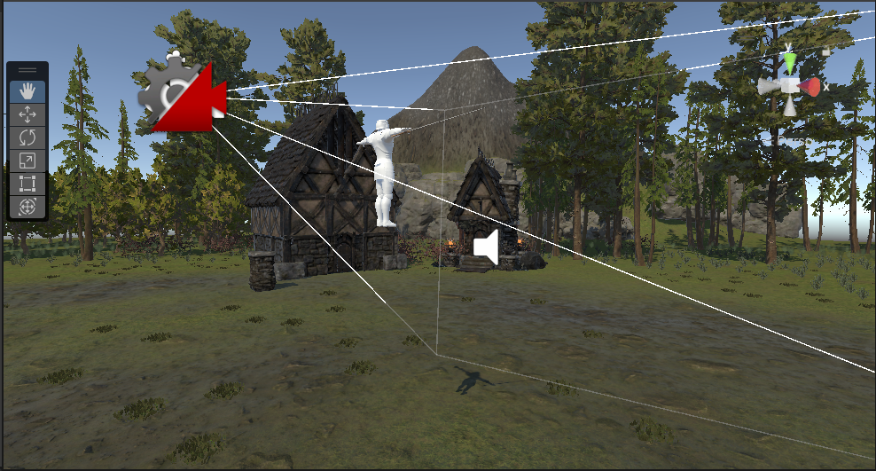

GALLERY

Project Game RPG
Detail Informasi
Proyek ini mengembangkan framework souls-like 3D di Unity menggunakan C# yang mengintegrasikan mekanik combat presisi, sistem directional dodge berbasis 2D Blend Trees, dan manajemen animasi tingkat lanjut untuk menciptakan pengalaman gameplay yang responsif dan imersif.

Simulasi Produksi Nira
Detail Informasi
Simulasi ini dirancang untuk memodelkan proses produksi nira di perkebunan kelapa sawit, dengan tujuan untuk meningkatkan efisiensi dan kualitas hasil produksi.

Windah Basudara
Detail Informasi
Windah Basudara adalah konten kreator dan streamer gaming Indonesia yang dikenal dengan julukan "Bapak Bocil Kematian" karena cara menghiburnya yang unik dan ekspresif.